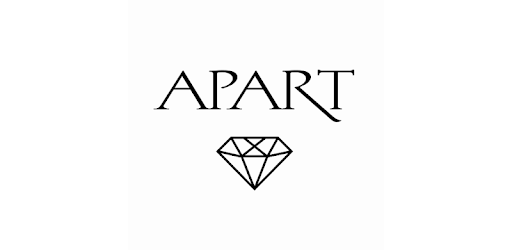

Apart
Początki firmy sięgają roku 1977, kiedy to Adam Rączyński założył warsztat jubilerski. W roku 1983 do Adama Rączyńskiego dołączył jego brat, Piotr.
Wtedy też powstała nazwa APART – z połączenia pierwszych liter imion właścicieli: Adama i Piotra Rączyńskich z oznaczającym w wielu językach sztukę słowem art.
Apart znalazł się na tej prestiżowej pozycji za sprawą... uczuć. Wszystko bowiem, co robi firma, w co się angażuje, czyni z miłości do piękna. Uwielbienie dla rzeczy pięknych, troska o każdy detal i nieustanne poszukiwanie nowych, jeszcze doskonalszych wzorów, rozwiązań i inspiracji sprawiło, że Apart wyrósł na niekwestionowaną potęgę polskiego jubilerstwa.